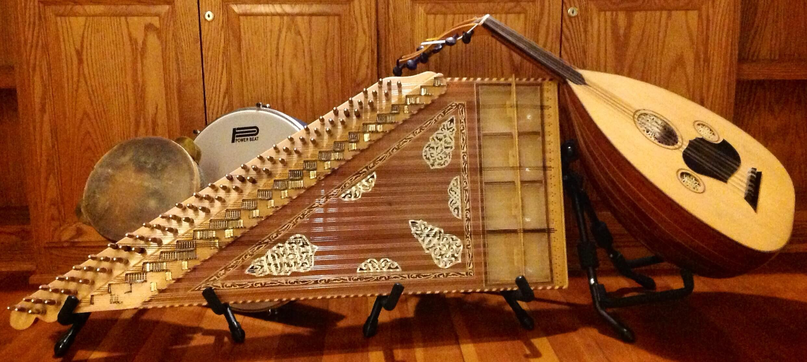

La Cítara.
La Citara es uno de los instrumentos musicales más antiguos del mundo entero. Proviene de la época de la edad media y por aquel entonces, este increíble instrumento estaba conformado por cuerdas metálicas con una estructura muy similar a la de una guitarra, donde incluso el nombre, por el cual ese le conoce a la guitarra llega a provenir de la Citara.
La citara es uno de los instrumentos considerados como divinos, gracias a sus notas suaves que apasionan a los oyentes.

Historia.
La citara tiene muchas características que la asimilan a un Arpa, no solo por su estructura, sino también por su sonoridad que es muy suave y también porque que es el instrumento predilecto para el tipo de persona que trata de expresar los sentimientos de una forma algo mesurada.
El carácter sobrio y tranquilo era la clave para que pudieran rendir tributo a Apolo, quien era el Dios de la MUSAS.
Existe una duplicación de este instrumento, como los de la misma familia de instrumentos de viento, que llego al continente Asiático, aunque tenía el nombre de Aulos. Este, tenía una sonoridad en sus notas muy distinta a la de la citara, algo penetrante que llamaba la atención de muchas personas al momento de oírlo.
En la antigua Grecia, la citara tenía una estructura muy peculiar, pero con el pasar de los años tomo una forma trapezoidal y el número de sus cuerdas vario de entre 20 a 30. Para tocar la citara se necesita usar una Púa.
La citara tiene un tamaño superior al del violín, pero sin embargo se pueden encontrar de diversos tamaños. Cuando llego al país Venezolano años más tarde, se le puso el nombre de Arpa viajera, un término que se le dio por un famoso músico y compositor de ese país.
Pero el origen de este instrumento es proveniente de las familias veena de la india. Su nombre proviene de una palabra que significa “setar” o “Tres cuerdas”.
Este instrumento fue circulando desde Asia occidental y central al subcontinente vecino de Asia meridional. Actualmente, la Citara es uno de los instrumentos musicales más clásicos de la música “Hindustani”, que es un género muy clásico en el norte de la India.
Cítara India.
La cítara india se deriva de los laúdes de cuello largo de Asia occidental y de la familia veena de los instrumentos musicales indios. Su nombre proviene del persa “setar”, “tres cuerdas”. Los instrumentos de Asia central y occidental circularon en el subcontinente de Asia meridional, desde al menos el siglo 12, y algunos fueron posteriormente modificados y adaptados a los usos indios. Los instrumentos de este nombre están actualmente en Irán y Asia central, pero el de Asia Central o sitar persa y la cítara de la India solo son similares en el nombre. La cítara es en la actualidad uno de los principales instrumentos de concierto de la música Hindustani (clásica del Norte de la India).
El primer instrumento de corte Indio de los siglos 17 y 18 fue el rudra vina, de la familia de cítaras planas, y este se convirtió en el modelo para algunas de las características distintivas de la cítara India, mas notablemente por sus trastes de metal, puente de plataforma y los resonadores.
Algunos estudiosos tratan de identificar a la cítara con los medievales tri-tantri de “tres cuerdas”, ya que venía mencionados en textos sánscritos, pero actualmente los estudios ponen a la cítara en la India del siglo XVIII, en la ciudad de Delhi. Desde el siglo XIX, la cítara fue uno de los instrumentos predominantes de la música Hindustani. También se utiliza en el cine y en otra música Light y para acompañar al baile. Las versiones regionales de la cítara se encuentran en las zonas rurales del norte de la India, Pakistán y Afganistán. La cítara se hizo muy conocida en el mundo occidental a través de la labor del Pandit Ravi Shankar a partir de finales de 1950.
Se convirtió en un fenómeno de la juventud en los años 60 después de que el Beatle George Harrison tomó lecciones de Shankar y toco la cítara en canciones incluyendo a “Norwegian Wood (This Bird Has Flown)”, “Love You To” y “Within You Without You”. Los Rolling Stones también utilizaron la cítara en “Paint It, Black ” y comenzó el legado de la cítara en la cultura del rock y del pop.
Yuri Landman ha creado la Moodswinger, una cítara eléctrica resonante de 12 cuerdas con un tercer puente. Por otra parte, el tema fílmico de El tercer hombre, compuesto e interpretado por Anton Karas, es una de las composiciones escritas originalmente para cítara más famosas de todos los tiempos.
{kind=link}